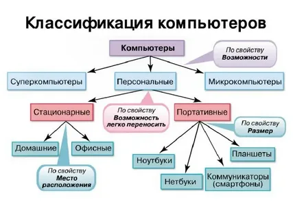
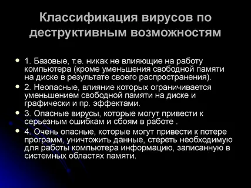

Компьютерное программное обеспечение (ПО) можно классифицировать по различным признакам По функциональному назначению: операционные системы, прикладное ПО, системное ПО, утилиты и т. д. По способу распространения: коммерческое, бесплатное, с открытым исходным кодом

Вирусы классифицируют по следующим критериям: Тип нуклеиновой кислоты. Вирусы подразделяют на ДНК- и РНК-содержащие. Структура нуклеиновой кислоты. Она может быть одно- или двунитчатой, линейной, циркулярной, непрерывной или фрагментированной. Стратегия вирусного генома. То есть используемый вирусом путь транскрипции, трансляции, репликации
